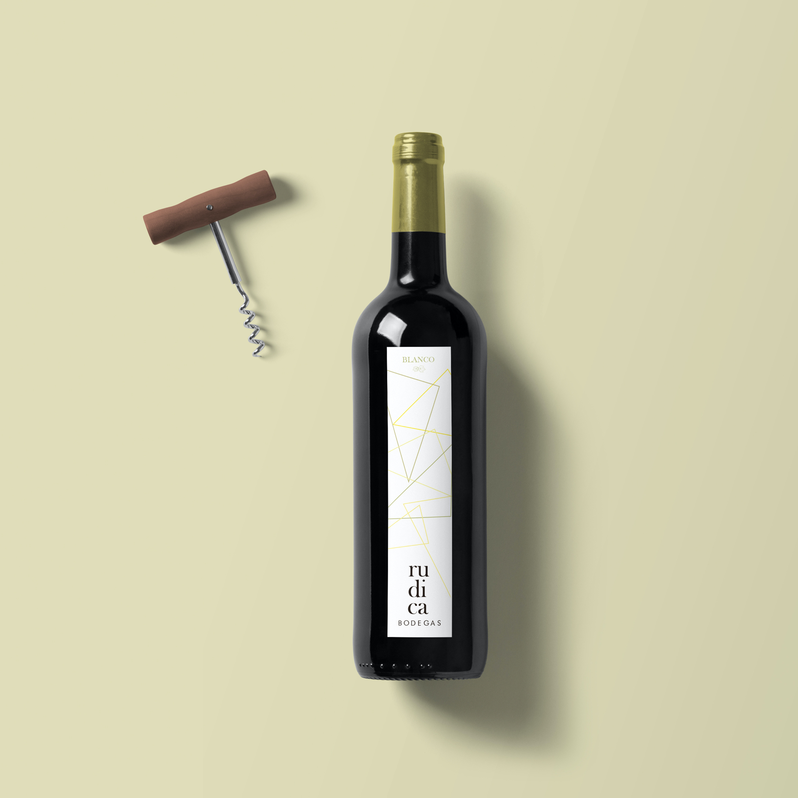
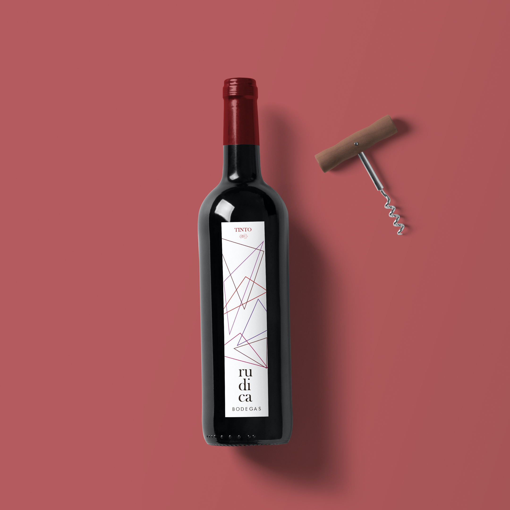
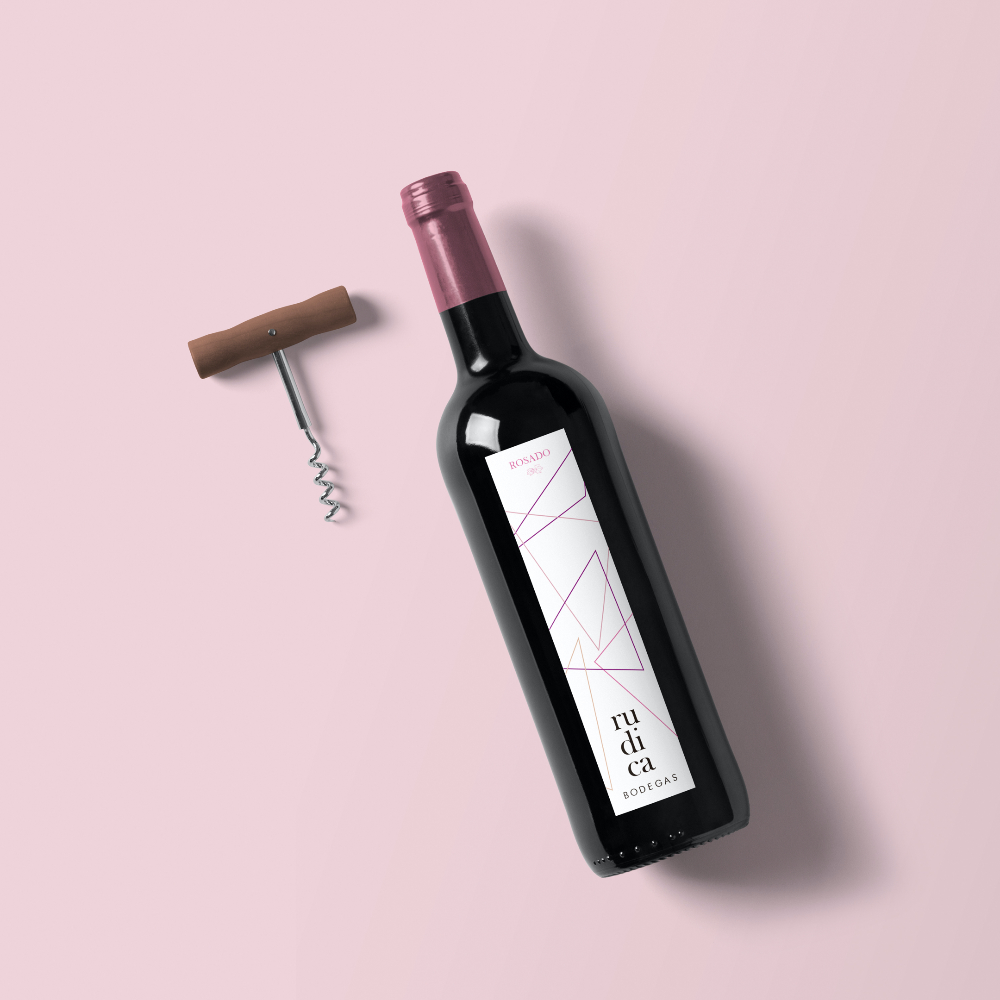

PROYECTO —— RUDICA
+ BRANDING + DISEÑO DE ETIQUETA
2017
RUDICA produce vino de año de gama alta pensado para ser consumido en ocasiones especiales. Va dirigido a mujeres y hombres de entre 45-65 años de gusto refinado y de clase media-alta. Principalmente se caracteriza por ser una empresa de esencia tradicional que apuesta por la innovación como baza para adentrarse en el mercado internacional. Pero no son los únicos valores que representa la marca; Familiar, Tradicional, Innovación, Modernización, Sobriedad y Exclusividad son todos los que componen esta marca.
Para la imagen de marca se utilizo la síntesis geométrica de pintores abstractos como Malevich o Mondrian que fueron referente para representar modernidad y sobriedad.
Desde el principio se tuvo en cuenta que contaba con dos elementos claramente discriminados que nos permitían contrastar la dicotomía de los valores de la bodega:
Por un lado , la fuente debía ser clásica porque la imagen sería moderna. Por ello se opto por las minúsculas para huir un poco del aire solemne y baroco que suelen proyectar las bodegas, de esta forma se conseguiría resaltar lo familiar desde un punto de vista más humano.
Por otro lado, el elemento buscaba representar el racimo de uva de forma esquemática. Por ello se concluyo que la base de la imagen debía de ser el triángulo y a partir de ahí componer un logotipo limpio y moderno.
El color era importante porque ayudaría a entender la imagen, por eso se necesitaba una paleta de tonos orgánicos relacionados con el sector, carmin de garanza, verde musgo, burdeos...
Finalmente se opto por el imagotipo ya que permite más flexibilidad de cara al resto de productos gráficos.
Desde el principio se concebío los dos elementos con autonomía, previendo que la imagen se podría usar como motivo en todos los diseños.
La imagen, que funciona con autonomía, es la síntesis geométrica del racimo de uva. La uva también es el origen del vino, la tradición, lo humano, que contrasta con la forma fría y precisa que se le ha dado.
COMPOSICIÓN:
Texto e imagen se complementan en una composición balanceada y equilibrada que representa la fusión armónica que se produce entre los valores tradicionales y la renovación de la empresa.
COLOR
La paleta alude a la uva, al vino, a la bodega, a la tierra, a la madera, al vino, a lo orgánico y tradicional. De nuevo se produce un notorio contraste entre el carácter del color y la composición gráfica.
TEXTO
La composición de “rudica” pretende imitar la verticalidad del racimo de uva y relacionarse así con la imagen del imagotipo. “Bodegas” en mayúscula y lineal geométrica representa la ambición por la modernización de la empresa y la profesionalidad.
FORMATO
El formato alargado responde a la verticalidad del texto del imagotipo y el racimo de uva. El papel fue verjurado y “rudica” irá con un barniz. Cada tipo de vino tiene su color representativo del vino, ya que las botellas fueron todas negras.
TRABAJOS ——
+ EKIN + ASADOR ALDANONDO + ABC WEB